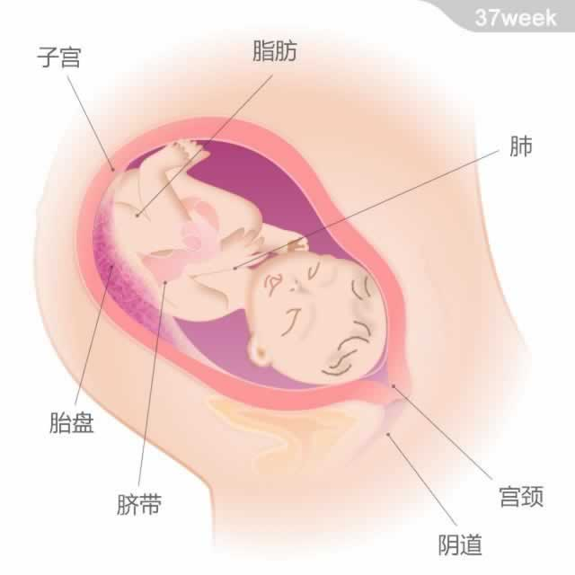

 宝宝的重量约为3.1千克，从头部到臀部的长度约为35厘米。 本周，宝宝已经发育成熟了，但仍在生长。此时的头围和腹部周长基本相同，医生已经可以估计出宝宝的大小，但准确的重量只有等他出生后你才能知道。宝宝体内的脂肪储备在继续增加，抓握时已经很有力了。 他的两个重要器官：肺部和大脑在此时都已经发挥功能，但其进一步的发育和完善则会贯穿于宝宝的整个童年。 此外，怀孕期间为宝宝提供营养的胎盘现在已经开始老化了，并渐渐显现出钙化斑和血块，它即将结束自己的使命。